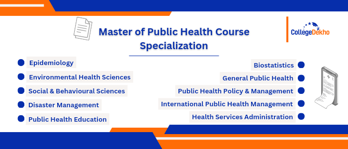

- We’re on your favourite socials!


MPH course
 Save
Save Request a callback
Request a callback Ask us
Ask us
What is Master of Public Health?
Master of Public Health is also commonly known as MPH Course. Master of Public Health is a professional postgraduate degree of 2 years. For MPH course admission, candidates are required to complete their bachelor’s degree with at least 50% marks in aggregate, in a similar subject. The MPH Course Syllabus includes several subjects like Ecology of Health, Public Health Biology, Human Psychology, Demographic Transition, etc. Some of the popular Master of Public Health specializations are Environmental Health Science, Public Health Administration, Biostatistics, and General Public Health.
MPH (Master of Public Health) course offers maintenance of public health along with dealing with various issues that are in relation to public health. The Master of Public Health or MPH Course also teaches students the various ways to tackle diseases and disease-causing agents. The average Master of Public Health course fee varies between INR 10,000 to INR 7.2 LPA. Some of the popular job opportunities after completing a Master of Public Health course include Chief Medical Officer, Biosecurity Specialist, Child Health Specialist, etc. The average salary after Master of Public Health or MPH Course usually ranges between the scale of INR 50,000 to INR 10 LPA.
Table of Contents
- What is Master of Public Health?
- Master of Public Health Course Highlights
- Why Choose a Master of Public Health Course?
- Master of Public Health (MPH) Online Platforms
- Difference Between Master of Public Health and Masters of Science in Public Health
- Master of Public Health Eligibility Criteria
- Master of Public Health Entrance Exam
- List of Popular Master of Public Health Specializations
- How to Apply for Master of Public Health Course?
- What is Master of Public Health Course Fees?
- Master of Public Health Syllabus and Subjects
- Popular Master of Public Health Colleges in India
- Top Master of Public Health Colleges State-Wise
- Top Private Master of Public Health Colleges in India
- Top Government Master of Public Health Colleges in India
- Master of Public Health Scope in India
- Career Options and Job Prospects after Master of Public Health
- Study Master of Public Health Abroad
- FAQs about MPH
Master of Public Health Course Highlights
Here are the highlights of the Master of Public Health course:
| Namecourseof | Master of Public Health |
|---|---|
| Abbreviation | MPH |
| Level | Postgraduate level |
| Duration | 2 years |
| Eligibility | Candidates must have a bachelor’s degree in medical science or any related field such as BPT, BDS, MBBS to study Master of Public Health |
| Course Fee | INR 10,000 to INR 7.2 LPA |
| Career Options | Epidemiologist, Healthcare Administrator, Research Analyst, Research Associate, Health Inspector. |
| Average Salary | INR 50,000 to INR 10 LPA |
Why Choose a Master of Public Health Course?
- A Master of Public Health degree will lead to a highly rewarding career where one will be well paid. Moreover, with an MPH degree and the research, education and project management involved, one will leave a huge impact on the lives of people.
- The demand for Public Health officials is increasing day by day so there is a lot of job safety involved in a career as a Master of Public Health graduate.
- With new virus mutations happening every single day, there will be no boredom in your workday.
- The Master of Public Health course is largely focused on various topics such as disease characteristics, prevention and cure of the disease, crisis management, strategic health policies, as well as various regulatory affairs.
- Master of Public Health students are also trained to handle worst-case scenarios.
- The course highly focuses on topics such as disease characteristics, prevention and cure, crisis management, strategic health policies, and regulatory affairs.
- The course prepares students to understand and promote awareness in different communities about various injuries, their causes, communicable and non-communicable diseases, etc. that affect health adversely.
Master of Public Health (MPH) Online Platforms
There are several online educational platforms that offer MPH degree programmes to students. Platforms like Coursera, Udemy, and Edx offer Master of Public Health courses in several academic levels like undergraduate, postgraduate, postgraduate, diploma, and postgraduate diploma degree courses. The cost of these courses is much less and even working professionals can apply for an online degree from these platforms. Popular courses of MPH offered at online educational platforms are mentioned below
Udemy
There are many MPH courses available on Udemy for students to choose from. Some of the popular courses are
| Course Name | Average Course Fee |
|---|---|
| Remote Sensing for Public Health | INR 8000 to INR 10,000 |
| Introduction to GIS for Public Health | INR 5000 to INR 8,500 |
| Introduction to Public Health | INR 1000 to INR 5000 |
| Health Masterclass: How To Transform Your Health & Life | INR 7,500 to INR 10,000 |
| Certificate in Public Health | INR 5000 to INR 11,500 |
Coursera
Some of the popular MPH courses offered on Coursera by several universities are
| Course Name | Average Course Fee |
|---|---|
| Master of Public Health | INR 3 LPA to INR 8 LPA |
| Magíster en Salud Pública Global | INR 5 LPA to INR 7 LPA |
| Global Master of Public Health (GMPH) | INR 3.5 LPA to INR 7 LPA |
Edx
Popular MPH courses on Edx are mentioned below
| Course Name | Average Course Fee |
|---|---|
| Health Informatics Technology in Population Healthcare Analytics | Free of Cost |
| Certified Lifestyle Medicine Executive | INR 55,000 to INR 1 LPA |
| Health Informatics and Technology in Decision Making | Free of Cost |
Difference Between Master of Public Health and Masters of Science in Public Health
While researching for a Master of Public Health course, students might often get confused between the Master of Public Health (MPH) and Masters of Science in Public Health (MSPH).
These two degrees are different from each other in multiple ways.
- A Master of Science in Public Health (MSPH) is an academic research degree that prepares candidates for more advanced degrees such as a doctorate.
- Master of Public Health on the other hand is a professional degree that targets practitioners.
- Based on the college or university, MSPH can help students to focus on a particular field in public health. It can also be beneficial for those students who are yet to gain two years of work experience in the healthcare field.
- Both of these degrees are marketed and the Master of Science in Public Health is focused mostly on the core disciplines of the Master of Public Health degree. Master of Public Health degree on the other hand pays additional importance to research methods, epidemiology as well as biostatistics.
Master of Public Health Eligibility Criteria
Eligibility criteria or minimum requirements for a Master of Public Health are parameters set by universities, colleges and institutes for allowing admission to students. Here are the eligibility criteria for a Master of Public Health degree:
- A candidate is required to obtain a bachelor’s degree in any health science field like MBBS, BDS, BPT, Biomedical Engineering, Nursing, or any other related professional health science course.
- Most universities and institutes require a minimum of 50% aggregate score in a Bachelor’s degree to be considered eligible for Master of Public Health admission.
- No entrance exams are held for Master of Public Health and hence, candidates need to check admission guidelines for respective institutes and universities.
- Minimum computer knowledge is preferred.
Required Skills for Master of Public Health
Professionals who are involved in the overall well-being of various communities across the world play a significant role. Their work setting varies from a hospital to government agencies, different educational institutions, research facilities as well as non-profit organisations. Hence, employers always expect public healthcare professionals with a degree in Master of Public Health to possess some key skills.
| Skills | Details |
|---|---|
| Communication | Public health professionals need to acquire communication skills in order to be successful in their field. Every organisation employs public health professionals with the goal of developing and implementing different health-related programs and supporting their clients with adequate service. Hence, having strong communication skills help them to understand the core values while interacting in an efficient manner with all co-workers. Public healthcare professionals need to know how different strategy-based communication principles are implanted and ways to collaborate with informatics specialists for evaluating public health programs. |
| Interpersonal Skills | Public health professionals do not go solo in terms of their work because it is impossible to implement programs independently. Their work involves constant collaboration with social workers, various project managers and healthcare professionals for implementing a program successfully. Due to such demands of the field, having interpersonal skills is essential as that allows one to interact with diverse individuals and communities for influencing the target group. |
| Leadership Skills | Candidates with a Master of Public Health degree need to possess leadership skills that would help them to create as well as communicate a common vision for the future. They must possess strong change and process management skills to provide solutions to community and organisational issues. Possessing leadership skills in the field of public health also means driving the energy of the commitment of people to goals and creating engagement in the form of collaborative dialogues for the advancement of objectives. For team building, negotiations along with conflict management, good leadership skills are necessary. |
| Technical Skills | Having basic technical skills like being familiar with MS Office and common internet applications are crucial for any candidate with a Master of Public Health degree. They must also be familiar with statistical software, social media platforms and all health information platforms. Strong mathematical and computational skills are required for understanding various scales of measurement. |
| Systems Thinking | Master of Public Health graduates must have the capacity of recognizing the system-level properties and analysing the dynamic interactions that take place between various groups, organisations, environments, and communities. It is also the responsibility of public health professionals to provide an explanation of how various systems models are to be tested, checked for validation and then adjusted accordingly. |
Master of Public Health Entrance Exam
While there is no specific entrance exam for MPH Course admission, some institutions offer admissions to Master of Public Health through a few National and State-level entrance exams for students. Mentioned below are the list of entrance examinations that the candidates can appear in for Master of Public Health admission:
| Entrance Exam | Details |
|---|---|
| NEET PG | July 7, 2024 |
| JIPMER | TBA |
| SRM JEE | TBA |
List of Popular Master of Public Health Specializations
The Master of Public Health course teaches students to play a leading role in the promotion of community awareness regarding various aspects of public health such as injury, violence prevention, communicable and non-communicable diseases along with different other issues that can affect our health and safety. Depending on one’s choice, Master of Public Health students can choose their specializations on the basis of previous work experience and interest. Here is a list of some common Master of Public Health specializations:

How to Apply for Master of Public Health Course?
Holding a bachelor’s degree in the medical field is considered to be the basic criteria for students opting for a Master of Public Health degree. Some other common admission procedures for a Master of Public Health include:
- Checking the university or college website for eligibility criteria.
- Ensuring that those parameters are met by the candidate.
- Filling out the application form and providing all the necessary documents.
- Appearing and clearing the entrance examinations.
What is Master of Public Health Course Fees?
The average Master of Public Health course fees for various institutes is mentioned below for reference:
| Name of College or Institute | Average Course Fee |
|---|---|
| IIHMR Jaipur | INR 6 LPA |
| Indian Institute of Public Health | INR 2.2 LPA |
| Manipal University | INR 2.2 LPA |
| University of Lucknow | INR 50,000 |
| Noida International University | INR 83,000 |
| Amity University | INR 80,700 |
| NITTE University | INR 78,000 |
Master of Public Health Syllabus and Subjects
Some of the important theoretical and practical aspects of a Master of Public Health course include lectures, internships, research projects, assignments, etc. The syllabus of the Master of Public Health course is covered in four semesters and has four parts:
- Foundation
- Core
- Electives
- Research projects
Master of Public Health syllabus for first-year is as follows:
Semester I |
Semester II |
|---|---|
|
Concept of Primary Health Care, Community |
Introduction to Epidemiology |
|
Ecology of Health |
Demographic Transition |
|
Public Health Biology- Introduction |
Introduction to project planning and management in healthcare and public health |
|
Sampling Methods and Techniques |
General overview of communicable diseases |
|
Statistical methods in public health research |
Mental health: Classification |
|
Human psychology |
Master of Public Health syllabus for second year is as follows:
Semester III |
Semester IV |
|---|---|
|
Definition and concept of vulnerable populations |
Principles of human nutrition |
|
Health inequality and healthcare disparities among vulnerable population |
Digestive absorption, metabolism of carbohydrates, proteins and lipids |
|
Environment- definition, concept, and components |
Introduction to various health systems |
|
Fundamentals of occupational health |
Socio-cultural perspectives of international health |
|
Healthcare legislation in India |
Public health in developing and developed countries |
|
Health planning- history, concept, models |
Ethical issues in international health research |
Master of Public Health Subjects
All Master of Public Health subjects are taught by keeping various specialisations in mind as students are well equipped when they graduate for their PhDs and job scopes. Some of the Master of Public Health subjects that are taught in relation to the health and science syllabus are psychology, social science, nutrition, ethics, etc.
The core Master of Public Health subjects list include:
- Basic epidemiology
- Biostatistics
- Health management: management principles and practices
- Principles and practice of public health
- Introduction to the health system and policies in health projects for developing countries
- Public health surveillance
- Basic microbiology
Master of Public Health elective subjects include:
- Health promotion
- Health economics
- Field epidemiology
- Epidemiology
- Policy and planning
- RMNCH+A
- Communicable diseases
- Non-communicable diseases
Popular Master of Public Health Colleges in India
Here is a list of popular Master of Public Health Colleges in India:
| Postgraduate institute of medical education and research, Chandigarh | Jawaharlal Institute of Postgraduate Medical Education and Research, Puducherry |
|---|---|
| Jamia Hamdard University, New Delhi | SRM Institute of Technology, Kanchipuram |
| JSS Medical College and Hospital, Mysore | Kalinga Institute of Industrial Technology, Bhubaneswar |
| AISECT University | Amity University |
| Indian Institute of Health Management Research University, Jaipur | Tata Institute of Social Science, Mumbai |
| Punjab University, Chandigarh | Delhi Pharmaceutical Sciences and Research University, Delhi |
| Datta Meghe Institute of Medical Science, Wardha | CMC Vellore |
Top Master of Public Health Colleges State-Wise
Below is the list of state-wise top Master of Public Health colleges:
Maharashtra | |
|---|---|
| Name of the Institute | Location |
| DYPMC | Pune |
| KIMS | Karad |
| Dr DY Patil Medical College | Navi Mumbai |
| TISS | Mumbai |
| The School of Public Health and Health Sciences, Savitribai Phule Pune University | Pune |
| Pravara Institute of Medical Science | Loni |
| MIT WPU Faculty of Social Innovation, Partnership and Co-creation | Pune |
| MIT-WPU | Pune |
Karnataka | |
| Name of the Institute | Location |
| JSS Medical College | Mysore |
| Manipal University | Bengaluru |
| NIMHANS | Bengaluru |
| KSHEMA | Mangalore |
| Rajiv Gandhi University of Health Sciences | Bengaluru |
| Padmashree School of Public Health | Bengaluru |
| Karnataka State Rural Development and Panchayat Raj University | Gadag |
Rajasthan | |
| Name of the Institute | Location |
| AIIMS Jodhpur | Jodhpur |
| IIHMR University | Jaipur |
| Poornima University | Jaipur |
| Mahatma Jyoti Rao Phoole University | Jaipur |
Jhunjhunu Maulana Azad University | Jodhpur |
| Career Point University | Kota |
| Shri Jagdishprasad Jhabarmal Tibrewala University | Jhunjhunu |
| University of Technology | Jaipur |
Haryana | |
| Name of the Institute | Location |
| Shree Guru Gobind Singh Tricentenary University | Gurgaon |
| Amity University | Gurgaon |
| Rachna Institute of Nursing | Mahendragarh |
| GD Goenka School of Medical and Allied Sciences | Gurgaon |
West Bengal | |
| Name of the Institute | Location |
| NSHM College of Management and Technology | Kolkata |
| Institute of Public Health | Kalyani |
| Haldia Institute of Management | Haldia |
| All India Institute of Hygiene and Public Health | Kolkata |
Delhi NCR | |
| Name of the Institute | Location |
| National Centre for Disease Control | New Delhi |
Top Private Master of Public Health Colleges in India
Some of the top private Master of Public Health colleges in India are:
| Institution Name | NIRF Rankings |
|---|---|
| Manipal University | 21 |
| KLE University | - |
| Noida International University | 35 |
| AISECT University | - |
| Punjab University | - |
| University of Hyderabad | - |
Top Government Master of Public Health Colleges in India
Some of the top government Master of Public Health colleges in India are:
| Institution Name | NIRF Rankings |
|---|---|
| Indian Institute of Public Health | 12 |
| Mahatma Jyoti Rao Phoole University | 36 |
| Jawaharlal Nehru University, New Delhi | 5 |
| Paravara Institute of Medical Sciences | - |
| University of Lucknow | - |
Master of Public Health Scope in India
Master of Public Health graduates can find many jobs in the health sector- including government and private hospitals, healthcare units, etc. here are some common job profiles for the MPH course:
- Research Scientist
- Public Health Management Analyst
- Manager- Breastfeeding Initiative
- Health Communications Specialist
- Health Resources Professional
- Professor- Public Health
- Public Relation Officer
- Environmental Health And Safety Specialist
- Health Counsellor
- Laboratory Technician
- Senior Technical Specialist- Public Health
Career Options and Job Prospects after Master of Public Health
There are numerous job options for Master of Public Health students, depending on their years of experience. They are qualified to work in private and government organisations, hospitals and healthcare units. Some common Master of Public Health job profiles for freshers are Healthcare Administrator, Health Informatics Specialist, Epidemiologist, Public Health Project Manager, etc.
Master of Public Health Private and Public jobs
Listed below are some Master of Public Health private and government jobs:
- Assistant Professor Epidemiology
- Assistant Public Health Professor
- Assistant Environmental Scientist
- Bioterrorism Researcher
- Biosecurity Specialist
- Chief Medical Officer
- Childbirth Health Educator
- Clinical Infectious Disease Specialist
- Child Health Specialist
- Chronic Disease Management Coordinator
Master of Public Health graduates can also opt for higher studies such as doctoral programs given the vast scope of research opportunities.
Master of Public Health Salary: Experience-wise
Master of Public Health salary depends on individuals as it varies largely with experience. The basic salary scale for a Master of Public Health graduate is stated below:
| Experience in Years | Salary Scale in INR |
|---|---|
| 0-5 years | 3.9 LPA |
| 5-10 years | 7 LPA |
| 10-29 years | 12 LPA |
Master of Public Health Salary: Job Profiles
As stated above, the average salary of graduates with a Master of Public Health degree varies with their years of experience and job position. Here is a comprehensive view of the salary structure based on job type:
| Job Type | Average Salary in INR |
|---|---|
| Senior Research Associate | 2.7 LPA |
| Research Scientist | 7.9 LPA |
| Research Associate | 2.4 LPA |
| Research Consultant | 8.4 LPA |
| Operations Team Leader | 3.1 LPA |
| Operations Manager | 6.7 LPA |
| Medical and Public Health Social Worker | 3.2 LPA |
Top Recruiters for Master of Public Health
The salary of Master of Public Health graduates is dependent on the experience of individual candidates and the roles they play in the organisation. Check out the salary structure of the top companies in India recruiting Master of Public Health students:
| Name of Company/ Organisation | Average Salary In INR |
|---|---|
| Ministry of Health and Family Welfare | 8-10 LPA |
| Research Resources Centre | 5.8- 6.9 LPA |
| Faith Healthcare | 6- 7.1 LPA |
| Dynamics Research Corporation | 2.5- 4 LPA |
Study Master of Public Health Abroad
The Master of Public Health course has a lot of options as each country has its own approach to healthcare. Again, various factors such as culture, people, behavioural patterns, and population also dictate the nature of public health in countries.
Program Structure for Master in Public Health Course Abroad
Although various specializations are available when selecting a Master of Public Health degree, this is the basic program structure for the course:
- Epidemiology
- Biostatistics
- Social, cultural, and behavioural factors in public Health
- Global Health
- Occupational and environmental health
- Indigenous health
Eligibility for Studying Master in Public Health Abroad
Here is the list of basic eligibility criteria for studying Master in Public Health in various countries:
- IELTS/ PTE/ TOEFL scores for English proficiency
- A Bachelor’s degree from any relevant university
- Resume with work experience
- Letter of Recommendation
Best Countries to Study Master in Public Health Abroad
Here are some of the best countries for studying Master in Public Health:
- Canada
- USA
- UK
- Australia
Master of Public Health Abroad Top Colleges
| College | Location | Average Course Fee |
|---|---|---|
| Harvard University | USA | INR 30,00,000 to INR 45,00,000 |
| University of North Carolina | USA | INR 20,00,000 to INR 35,00,000 |
| University of Oxford | UK | INR 27,50,00 to INR 37,80,000 |
| University of Waterloo | Canada | INR 15,70,000 to INR 20,00,000 |
| University of Cambridge | UK | INR 25,00,000 to INR 47,00,000 |
| University of Sydney | Australia | INR 20,00,000 to INR 48,70,00 |
| University of Toronto | Canada | INR 14,60,000 to INR 30,00,000 |
| University of Queensland | Australia | INR 18,70,000 to INR 30,50,000 |
FAQs about MPH
What is the average course fee for the Master of Public Health in India?
The average course fee for a Master of Public Health degree in India ranges between INR 10,000 to INR 70,000 per year. The course fee varies depending on a lot of factors like whether the college is a private or public institution, infrastructural facilities, availability of laboratory and other medical pieces of equipment, etc.
What are some suggested reference books for the Master of Public Health degree course?
Some of the suggested books for the Master of Public Health degree course are listed below for your reference
- Local Authorities and the Social Determinants of Health
- Research Methods in Health Promotion
- Managing Health Education and Promotion Programs
- Principles and Foundations of Health Promotion and Education
- Essentials of Biostatistics in Public Health
What are some of the best colleges in India to apply for a Master of Public Health degree?
There are several educational institutions in India that offer Master of Public Health degree courses in India. Some of them are mentioned below for your convenience
- SAvitribai Phule Pune University
- DY Patil University
- MIT World Peace University
- TATA Institute of Social Sciences
- Sandip University
What is the scope after completing a Master of Public Health degree?
There are a lot of opportunities after completing a Master in Public Health degree. Professional graduates of this course are eligible to work in private as well as public sectors of the country. Moreover, interested candidates can also choose to pursue a research degree under this course.
What is the initial average salary of Master of Public Health graduates?
The average initial salary scale of a Master of Public Health degree course in India is around 3,90,000 per annum. The salary scale increases with the increase in the work experience, the competency of the candidate, and the highest educational qualification of the professional.
What are some best specializations under the Master of Public Health degree?
Some of the best specializations after the Master of Public Health degree course are as follows:
- Epidemiology
- Health Services Administration
- Environmental Health Science
- Biostatistics
- Disaster Management and Emergency Readiness
What are some of the popular designations after a Master of Public Health degree?
There are ample job opportunities after completing a postgraduate degree in Master of Public Health. Some of them are:
- Assistant Professor Epidemiology
- Assistant Public Health Professor
- Assistant Environmental Scientist
- Bioterrorism Researcher
- Biosecurity Specialist
What are some of the core subjects that are taught under the Master of Public Health degree?
There are a lot of subjects that are taught under the Master of Public Health degree. Some of the core subjects that are common in almost all educational institutions are as follows:
- Health Systems and Policies
- Biostatistics
- Epidemiology
- Health Economics and Financing
- Health Program Management
What are the top recruiting agencies for a Master of Public Health degree?
There are many recruiting agencies that employ professional graduates of Master of Public Health. Some of them are
- Johnson & Johnson India
- Institute of Public Health
- LiveNutriFit Wellness Pvt Ltd
Is the Master of Public Health degree course easy to study?
The difficulty of any degree course varies from one student to another as it depends on the intellectual capabilities. But, from a generic perspective, a master's degree in public health can be challenging for students who have a weak mathematical base. This is because subjects like Biostatistics and Epidemiology require high-level mathematical understanding.
What are some of the best colleges abroad to study a Master of Public Health program?
Some of the top colleges abroad to study a Master of Public Health program are:
- Harvard University, USA
- University of North Carolina, USA
- University of Oxford, UK
- University of Cambridge, UK
- University of Sydney, Australia
- University of Queensland, Australia
- University of Toronto, Canada
- University of Waterloo, Canada
Can I assist in research while studying for a Master of Public Health degree?
In most cases, there are options to assist the faculty in research while studying a Master of Public Health degree. However, the number of positions open keeps changing from time to time.
Is there any scope of research after studying for a Master in Public Health?
There is plenty of scope for research in the public healthcare field as healthcare is universal. Depending on the area of interest, one can pursue their research and get a PhD.
What are the eligibility criteria for studying a Master in Public Health program?
Since there are no entrance exams, students need to check colleges, institutes and university websites about their admission criteria. However, a candidate must obtain a Bachelor’s degree in medical science (or related field) such as MBBS, BDS or BPT.
Does a Master of Public Health have a good career prospect?
Graduates in Master of Public Health have a scope of building a highly rewarding career since their need is growing at national and international levels. There are ample job opportunities available in the public and private sectors in India as well as abroad. Those who wish to continue their studies can also go into a doctoral program.
What specialisations are available for the Master of Public Health course?
Various specialisations available for the Master of Public Health course are Environmental Health Sciences, Epidemiology, Biostatistics, General Public Health, Social and Behavioural Sciences, Public Health Policy and Management, Disaster Management and Emergency Preparedness, International Public Health Management, Public Health Education and Health Services Administration.
Are there any entrance exams for studying for a Master of Public Health course?
No, there are no entrance exams for getting admitted to a Master of Public Health course.
What is the course duration of MPH?
The course duration of MPH is 2 years and the course is divided into 4 semesters.
What kind of a course is a Master of Public Health?
Master of Public Health is a postgraduate course.
What is the full form of MPH?
The full form of MPH is Master of Public Health.
What are the top colleges offering Master of Public Health (MPH) courses ?
I want admission in Master of Public Health (MPH). Do I have to clear any exams for that ?
What is the average fee for the course Master of Public Health (MPH) ?
What are the popular specializations related to Master of Public Health (MPH) ?
What is the duration of the course Master of Public Health (MPH) ?
Related Questions
Related News


Related Articles


- Courses
- MPH